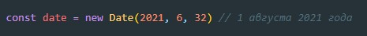

Объект даты
Создание объекта даты
В качестве входного параметра классу Date можно передать год (4 цифры), месяц (номерация месяцев начинаетс я с 0)
и число
Если передать в качестве числа месяца например - число 32 (т.е. большее количество дней у указанного месяца), то
Date дату переведет на следующий месяц и разница дней и будет текущим числом

Методы
- getFullYear() - Получить год (из 4 цифр)
- getMonth() - Получить месяц, от 0 до 11.
- getDate() - Получить число месяца, от 1 до 31.
- getHours() - часы
- getMinutes() - минуты
- getSeconds() - секунды
- getMilliseconds() - милисекунды
- getDay() - Получить номер дня в неделе. Неделя в JavaScript начинается с воскресенья, так что
результат будет числом от 0(воскресенье) до 6(суббота).
- getTime() - Возвращает число миллисекунд, прошедших с 1 января 1970 года
- getTimezoneOffset() - Возвращает разницу между местным и UTC-временем, в минутах.
Форматирование и вывод дат
Это делается вызовом date.toLocaleString(локаль, опции), в котором можно задать много настроек. Он
позволяет указать, какие параметры даты нужно вывести, и ряд настроек вывода, после чего интерпретатор сам
сформирует строку.